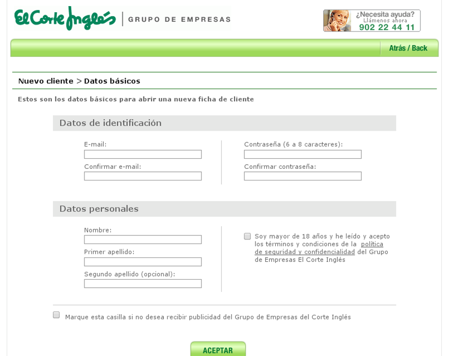

Universitat per a Majors
Compras
a través de Internet
Comprar por Internet
-
Comprar por internet es una operación muy común en la sociedad actual, que requiere ciertos conocimientos de manejo de la computadora, nociones básicas de navegación. Estamos en el momento ideal para introducirnos en esta materia.
-
Qué podemos comprar. De todo: ropa, tecnología, billetes de viaje, entradas de espectáculos. Cualquier cosa que se nos ocurra se vende por Internet.
Ventajas de la compra por Internet
-
Comodidad. Tranquilamente desde casa realizamos las compras.
-
Variedad. Podemos encontrar todo tipo de artículos que muy dificilmente encontraríamos en tiendas locales.
- Seguridad. El mecanismo de compra por internet es muy seguro, aunque deberemos tener claras algunas nociones básicas de seguridad.
Qué necesitaremos
-
Registro en un sistema externo. Introduciremos nuestros datos en aquella web en la que queramos realizar la compra. Nuestra dirección de correo será la que determine nuestro usuario en la web.
-
Datos reales. La información personal que introduzcamos (nombre, DNI, dirección física) deberá ser genuina y no inventada.
- Método de pago. Evidentemente, el elemento más importante y a la vez al que debemos prestar más atención.
Tarjeta de crédito
-
Pasarela web de pago. Veremos una pasarela de pago que nos solicitará información como el número de tarjeta, fecha de caducidad, y CVC.
-
La seguridad está muy controlada. Es difícil que comprando en un comercio reconocido se realice una estafa con nuestros datos.
- . Evidentemente, el elemento más importante y a la vez al que debemos prestar más atención.
Intermediarios de pago
-
Entidades de gestión de datos de pago 100% seguras. Proporcionan un compromiso entre ofrecer facilidad de pago online y seguridad de nuestros datos.
-
Requieren un registro adicional. A cambio ofrecen comodidad y seguridad, aunque no todos los comercios aceptan el pago con estas plataformas. La más extendida es Paypal.
-
Ejemplo de entidades. Paypal, Google Wallet, Amazon Payments.

Seguridad de una página
-
Este proceso es trasparente, auditado y muy difícil de falsear. Hay muchas personas que velan por la seguridad en las transacciones por Internet, aunque no está de más que nosotros comprobemos el correcto funcionamiento.
-
Acceso a una página segura. Veremos un candado en la barra de direcciones. Un candado verde nos indica que la transacción está cifrada y que la entidad con la que nos estamos comunicando ha sido verificada por una autoridad de certificación.

¡Ya estamos listos!
-
Vamos a comentar el proceso de registro y compra de productos en dos de los principales comercios online de España. El Corte Inglés y Amazon.
-
Nos registraremos con datos reales, aunque no introduciremos información de tarjeta de crédito.
-
-
Nos servirá para hacernos una idea del proceso
-

¡Empezemos!
-
Vamos a comentar el proceso de registro y compra de productos en dos de los principales comercios online de España. El Corte Inglés y Amazon.
-
Primero que nada, quiero que busquéis y comparéis precios de un libro que queremos comprar:
-
Física de lo imposible, por Michio Kaku
-
¿Dónde tenemos el precio más económico?
-
Empezaremos nuestra aventura en El Corte Inglés.
Carrito de la compra
-
Sin necesidad de darnos de alta podemos almacenar artículos en nuestro carrito. Gracias a las cookies del navegador
-
Una vez terminemos de añadir artículos, iniciaremos el proceso de compra.
-
En ese momento hay que registrarse (si es la primera vez que accedemos), o autenticarse.
